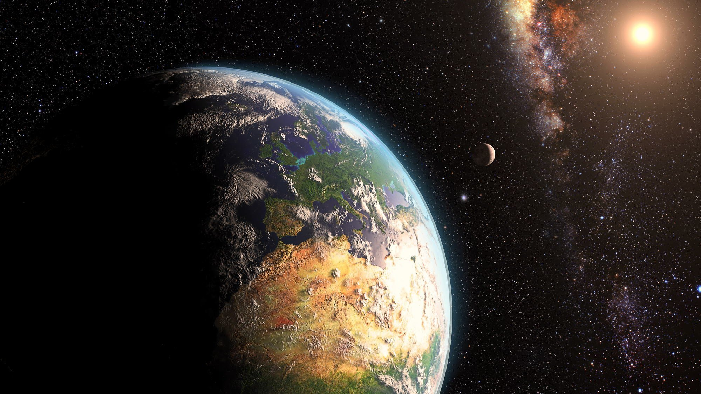
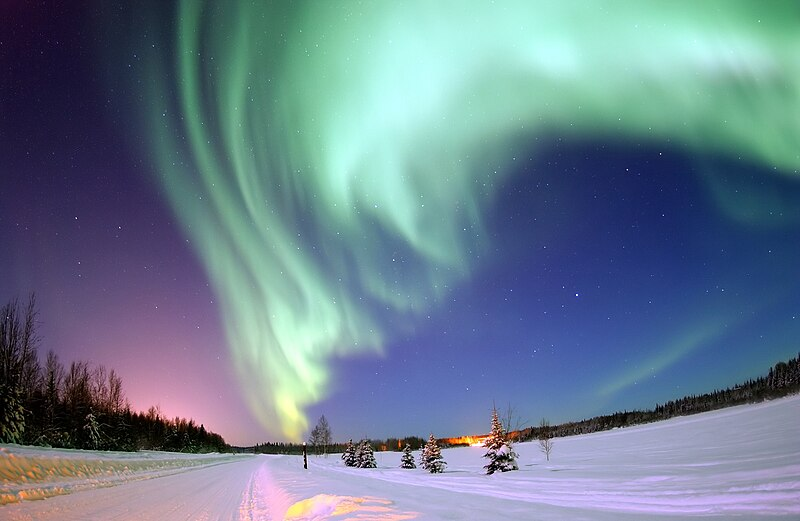

Sejarah

Proses pembentukan Bumi merupakan peristiwa besar yang terjadi
selama ribuan tahun, menimbulkan berbagai perdebatan karena tidak
dapat diamati atau diuji langsung oleh para ahli. Beberapa teori
utama mengenai sejarah pembentukan Bumi adalah sebagai berikut:
1. Teori Nebula
Teori yang dikemukakan oleh Immanuel Kant
(1755) dan disempurnakan oleh Piere de Laplace (1796) ini
menjelaskan bahwa Bumi terbentuk dari kabut nebula—kumpulan gas di
luar angkasa. Kabut ini tertarik oleh gravitasi, berputar, dan
materi yang terlempar mengalami pendinginan serta penggumpalan, dan
akhirnya membentuk planet.
2. Teori Planetesimal
Forest Ray dan T.C. Chamberlain
menjelaskan bahwa Matahari terbentuk terlebih dahulu, diikuti oleh
tarikan gravitasi dari bintang lain yang melintas, yang menyebabkan
gas matahari membentuk planetesimal. Gas tersebut mengalami
pendinginan dan mengumpul menjadi planet, termasuk Bumi.
3. Teori Ledakan Besar (Big Bang)
Teori ini menyatakan bahwa
Bumi terbentuk dari ledakan besar yang menciptakan galaksi dan
nebula. Selama 4,6 miliar tahun, nebula membeku dan membentuk
galaksi seperti Bima Sakti, dan dari bagian galaksi inilah Bumi
terbentuk.
Fenomena Alam
Fenomena alam adalah peristiwa luar biasa yang terjadi karena
kekuatan alam yang memengaruhi kehidupan manusia. Mari jelajahi
lebih lanjut berbagai fenomena alam menarik yang menjadi daya tarik
bagi wisatawan di seluruh dunia!
Aurora

Fenomena alam aurora adalah tampilan cahaya yang menakjubkan di
langit malam, terutama di daerah-daerah dekat kutub utara dan
kutub selatan. Aurora dikenal dengan nama aurora borealis di
belahan bumi utara dan aurora australis di belahan bumi selatan.
Fenomena ini terjadi ketika partikel-partikel bermuatan listrik
dari matahari berinteraksi dengan atmosfer bumi, menghasilkan
cahaya yang berkilauan dan berwarna-warni. Destinasi populer untuk
melihat aurora adalah Norwegia, Islandia, Finlandia, dan Kanada.
Salar de Uyuni

Salar de Uyuni adalah dataran garam terbesar di dunia. Menurut
Discovery, tempat ini juga dianggap sebagai salah satu pemandangan
yang paling ekstrim dan luar biasa di Amerika Selatan. Salar de
Uyuni merupakan hamparan garam putih yang membentang sepanjang
10.582 km dari Altiplano. Lapisan tipis air yang menutupi garam
juga bisa mengubah dataran garam menjadi "Cermin Terbesar di
Dunia" yang memantulkan langit. Refleksi langit indah ini
kemungkinan besar terlihat selama musim hujan.
Gunung Pelangi Zhangye Danxia

Gunung pelangi Zhangye Danxia terletak di kota terpencil di
Provinsi Gansu, sebelah utara China yang telah dinobatkan sebagai
taman nasional. Formasi bebatuan dan perbukitan hampir terlihat
seperti dicat. Lanskap berwarna-warni Zhangye Danxia diciptakan
oleh batu pasir dan mineral yang berlapis di atas satu sama lain
selama bertahun-tahun dengan pergeseran lempeng tektonik
menciptakan lapisan dicat miring melintasi formasi batuan dan
perbukitan batu pasir.
Penjelajahan Antariksa

Penjelajahan antariksa memiliki tujuan penting bagi kehidupan
makhluk hidup di Bumi karena dapat melindungi planet Bumi dari
ancaman tubrukan asteroid. Selain itu, penjelajahan antariksa
diperlukan karena kondisi planet Bumi yang semakin rusak dalam
beberapa puluh tahun terakhir. Upaya penjelajahan antariksa
dilakukan sebagai bentuk upaya bertahan hidup dari berbagai bencana
lingkungan dan perubahan iklim yang semakin destruktif di masa
depan.